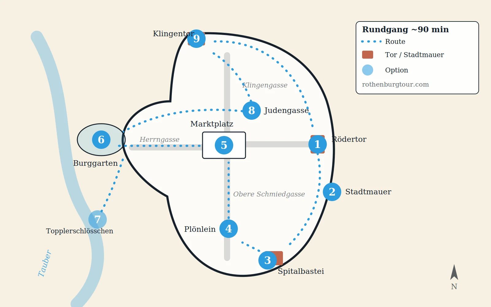

Самостоятельная прогулка по Ротенбургу: готовый маршрут
Девять точек, около девяноста минут, с картой. Куда идти, сколько стоит и когда — бесплатно.
Купить аудиогид Маршрут Быстрые ответыРотенбург-об-дер-Таубер — обнесённый стеной овал, который пересекается за двадцать минут. И при этом здесь ухитряются провести день плохо: возвращаться по своим следам, не дойти до стены, стоять на площади ровно в тот час, когда на ней стоят все автобусы Баварии.
Маршрут ниже снимает эту проблему. Полтора часа пешком, девять точек, без возвратов: стена, Плёнляйн, Рыночная площадь, Замковый сад и тихие переулки — в работающем порядке. Бесплатно, без брони, начать можно в любой час.
Чего он не делает — так это не пересказывает историю города: почему у стены два кольца, что произошло здесь в 1945 году, кто такой Топплер и откуда взялись местные легенды. Для этого есть аудиогид TouringBee: 25 остановок, около 90 минут, офлайн.
Планируете поездку целиком? Начните с полного гида по Ротенбургу-об-дер-Таубер.
Коротко
- Эта петля
- Около 90 минут пешком, круг с возвратом в начало
- Сколько стоит
- 0 € — большая часть боевого хода бесплатна и открыта круглосуточно
- Под ногами
- Брусчатка везде, на стене — неровные доски
- Старт
- Ворота Rödertor на востоке, у них размеченная лестница на стену
- Полный городской маршрут
- Turmweg: около 4 км вокруг старого города, примерно 2,5 часа
- Платное по дороге
- Башня ратуши 4 € · церковь Святого Якова 5 € · Музей криминалистики 10,50 €
Три способа пройти Ротенбург
Самостоятельно, по этой странице. Бесплатно, без фиксированного времени, останавливаетесь сколько хотите. Вы получаете форму города и всю практику; историю ищете отдельно или обходитесь без неё.
С живым гидом. Можно задать вопрос и получить живой ответ — этого не умеет ни одна запись. Взамен вы привязаны ко времени старта и к темпу группы.
С аудиогидом TouringBee. История приходит по ходу прогулки, в вашем темпе и офлайн. 25 остановок, около 90 минут, от 9,99 €. Задать ему вопрос нельзя.
Выбирайте по тому, что вам нужнее: компания и вопросы — или свобода и контекст.
Есть и четвёртое, но это не альтернатива ни одному из трёх: вечерний обход с Ночным стражем. Он идёт после темноты, по своему маршруту, и это скорее представление, чем экскурсия по городу. Ему место в вашем вечере.
Маршрут: девять точек, около 90 минут

1. Rödertor, восточные ворота. Отсюда старт. Парковка P1 сразу за воротами, от станции минут десять пешком, и прямо у ворот размеченная лестница на стену. Пройти стену первой — значит пройти её на свежих ногах. Туалет на парковке; на стене туалетов нет.
2. Стена, с востока на юг. Поднимайтесь и поворачивайте направо. Вы на крытом деревянном настиле: черепичная крыша над головой, бойницы на уровне глаз, вид вниз в задние дворики, которых с улицы не видно. Минут двадцать нормальным шагом. Доски неровные, проход такой, что вдвоём расходятся боком, а в сырую погоду скользко. Ни билета, ни турникета.
На многих камнях вырезаны имена. Их стоит разглядеть, и у них есть причина, которую эта страница объяснять не будет.
3. Spitalbastei. Южный бастион стоит пройти насквозь, а не мимо: два внутренних двора и череда воротных проездов дают почувствовать толщину укреплений так, как с улицы не получится. Пять минут, бесплатно. Если подойти пешком с юга, глубина ворот читается полнее.
4. Вверх по Spitalgasse к Плёнляйну. Десять минут в горку по брусчатке. Плёнляйн — развилка с жёлтым фахверковым домом, фонтаном и башней с каждой стороны, самый узнаваемый вид Ротенбурга. В сезон здесь обычно стоит очередь из тех, кто его снимает. Лучший шанс застать его почти без людей — рано утром, примерно с 07:00 до 08:00; вечером тоже становится спокойнее.
5. По Schmiedgasse к Рыночной площади. Пять минут, чуть в горку. На площади ратуша с одной стороны и купеческие дома с фронтонами вокруг. На Ратстринкштубе из часов выходят фигуры и разыгрывают легенду о Мейстертрунке — городские материалы дают окно с 10:00 до 22:00, каждый час. Длится около минуты, и ради этого люди встают посреди площади.
Маршрут показывает, куда идти. Аудиогид — что здесь происходило. 25 остановок, около 90 минут, офлайн. Пройти Ротенбург с TouringBee →
По желанию: башня ратуши. 220 ступеней до площадки на 52 метрах и вид на всё черепичное море. Две вещи знать заранее: касса — наверху , в конце подъёма, а не внизу, и только наличными , 4 € взрослый и 2 € до 14 лет. Последний участок — узкий лаз по одному; если в тесноте некомфортно, этот подъём пропустите. Часы: с апреля по октябрь ежедневно 09:30–12:30 и 13:00–17:00; с января по март и в ноябре только по выходным 12:00–15:00; в дни рождественского рынка ежедневно 10:30–14:00 и 14:30–18:00, с пятницы по воскресенье до 19:00.
6. По Херрнгассе на запад, к Замковому саду. Десять минут под уклон по самой широкой улице города и наружу через ворота Burgtor. Замковый сад — на западной оконечности гребня: бесплатно, открыто, широкий вид на долину Таубер и южные укрепления. Если подниматься на башню не хочется, это хорошая альтернатива для панорамы — вид другой, а не хуже.
7. По желанию: спуск в долину. Чтобы увидеть Ротенбург не только изнутри стен, спуститесь из сада по тропе к Topplerschlösschen и двухарочному мосту. Спуск — 15–20 минут; на весь крюк закладывайте около 45 и помните, что обратно в горку.
8. Обратно на восток переулками. Вместо того чтобы возвращаться по Херрнгассе, срежьте мелкими улицами в сторону Judengasse. Там заметно спокойнее, чем на торговых улицах, и старый город показывает другую сторону. Минут десять до площади.
9. Северная стена: Klingentor — Rödertor. Снова поднимайтесь на настил, с севера. Этот участок обычно ощущается спокойнее центральных улиц и особенно хорош в низком вечернем свете. С галереи у Röderbastei сверху видна Gerlachschmiede с её характерной треугольной крышей — ракурс, который с улицы не получить. Двадцать минут, и вы там, откуда вышли.
Стена: сколько её проходить
Цифры самого города: стена идёт вокруг старого города около 4 км , на ней 42 башни, а размеченный маршрут вдоль неё — Rothenburger Turmweg — занимает примерно 2,5 часа. Большая часть настила открыта круглосуточно и ничего не стоит.
Петля выше использует два его участка, в сумме минут сорок, — ровно столько, сколько большинству в удовольствие. Пройти все 4 км за один раз — это долгий отрезок по неровным доскам под низкой крышей, и именно на нём прогулка по стене начинает ощущаться коридором. Нужен весь — разбейте на два захода или оставьте участок на вечер.
Городской Turmweg турофис описывает как почти безбарьерный, и если лестницы проблема, это лучший вариант. Сам боевой ход — нет: на него поднимаются по лестницам у ворот, в том числе у Rödertor, Würzburger Tor и Galgentor, и подъёмников на нём нет нигде.
Во что обходится
- Сама петля
- 0 €
- Боевой ход по стене
- 0 €
- Замковый сад
- 0 €
- Плёнляйн, Рыночная площадь, переулки
- 0 €
- Башня ратуши
- 4 € взрослый · 2 € до 14 лет · 3 € группы от 10 · 10 € семейный · наличные
- Röderturm
- 3 € взрослый · 1,50 € до 18 лет · сезонно: июнь–август ежедневно 11:00–14:00, в апреле, мае, сентябре и октябре по выходным и праздникам
- Церковь Святого Якова
- 5 € взрослый · 3,50 € льготный · до 12 лет бесплатно
- Музей средневековой криминалистики
- 10,50 € взрослый
- аудиогид TouringBee
- от 9,99 €, одна покупка
Целый день пешком здесь стоит ноль, пока вы сами не решите куда-нибудь зайти.
Когда гулять
Раннее утро — лучший шанс увидеть Плёнляйн и Рыночную площадь до того, как день наберёт обороты, и свет в это время на вашей стороне.
Середина дня — город живее всего: открыты магазины, музеи и башни. Это же часы, когда на центральных улицах больше всего групп. Хорошее время для того, куда нужен билет, и неудачное для фотографий.
Вечер— дневные объекты закрываются, центральные улицы постепенно пустеют, включается подсветка. Если ночуете в Ротенбурге, оставьте на это время участок стены и несколько переулков. Это и есть довод за ночёвку внутри стен , а не за поездку одним днём.
Обувь важнее погоды. Весь старый город — средневековая брусчатка, настил на стене неровный и в сырость скользкий. Плоская подошва с амортизацией; каблуки здесь плохая идея.

Прогулка по Ротенбургу — аудиогид без экскурсоводаДоступ сразу
- 100% офлайн — без Wi-Fi и мобильного интернета
- Офлайн-карта с GPS — видно, где вы; запись включаете сами у точки
- 25 точек от Рыночной площади до Госпитального бастиона
- Пройти за 1,5–2 часа, в своём темпе
Аудиогид
Эта страница даёт маршрут. Аудиогид объясняет, почему на нём важна каждая точка.
Почему у Ротенбурга две линии укреплений? Что произошло со стеной в 1945 году и кто заплатил за её восстановление? Откуда взялась легенда о Мейстертрунке? И почему у местных щелкунчиков такие лица?
TouringBee рассказывает это прямо по ходу прогулки: 25 остановок по тем же главным местам, что и петля выше, около 90 минут, офлайн-карта показывает, где вы, а запись вы включаете сами у каждой точки.
25 остановок · ~90 минут · 8 языков · полностью офлайн · от 9,99 €
Практика
Цены и часы сверены для сезона 2026/27 по официальным материалам города. Перед поездкой проверьте — они меняются.
Как добраться до старта. Магистральной станции нет: пересадка в Штайнахе (Steinach b Rothenburg) на короткую электричку. На машине — парковки P1–P5 за стенами; проезд по старому городу для приезжих закрыт с 11:00 до 16:00. Если удобнее приехать организованной группой, сравните однодневные поездки из Мюнхена, Франкфурта и Нюрнберга — обычно они оставляют в городе три-пять свободных часов, то есть эту петлю плюс обед.
Туалеты. На парковках и вокруг Рыночной площади. На стене их нет.
Еда и вода. Петля выводит к Рыночной площади — кафе там. На настиле не работает ничего.
Дождь. У настила есть крыша, и в плохую погоду это самое комфортное место в городе. Проблема не в небе, а в брусчатке.
Доступность. Главные улицы и площади достижимы без лестниц, но покрытие в старом городе в основном мощёное и тяжело даётся маленьким колёсам. На боевой ход и обе башни с подъёмом ведут только лестницы. Городской Turmweg — доступная альтернатива.


Коротко
Если времени мало, не пытайтесь обойти всё кольцо. Начните у Rödertor, пройдите южный участок укреплений, поднимитесь через Плёнляйн на Рыночную площадь, дойдите до Замкового сада и вернитесь северными переулками. Полтора-два часа — и вы увидели пространства, из которых состоит Ротенбург, не пройдя ничего дважды.
А если хочется не просто найти эти места, но и понять их, пройдите тот же маршрут с аудиогидом: 25 остановок, около 90 минут, полностью офлайн.
Частые вопросы
Можно ли бесплатно пройти по крепостной стене Ротенбурга?
Да. Большая часть боевого хода бесплатна и открыта круглосуточно. Город оценивает стену примерно в 4 км с 42 башнями, а свой размеченный маршрут вдоль неё, Turmweg, — примерно в 2,5 часа.
Сколько времени нужно, чтобы обойти Ротенбург?
Петля с этой страницы — около 90 минут. Короткий городской маршрут город оценивает примерно в 1,5 часа, большой — примерно в 2,5, так что петля попадает в обычный диапазон.
Откуда начинать прогулку по Ротенбургу?
От ворот Rödertor на востоке. Там размеченная лестница на стену, рядом парковка P1, и при таком старте стена проходится на свежих ногах, а финиш получается в центре.
Есть ли приложение для самостоятельной прогулки по Ротенбургу?
Да — аудиотур TouringBee: 25 остановок, около 90 минут, полностью офлайн со своей картой, на восьми языках, от 9,99 € за сам гид.
В какое время суток лучше гулять?
Рано утром — ради тишины и света; в середине дня — если нужно, чтобы всё работало; вечером — когда дневные объекты закрылись и включилась подсветка.
Нужна ли специальная обувь?
Нужна нормальная. Старый город — средневековая брусчатка, на стене неровные доски, в сырость скользкие. Плоская подошва с амортизацией.
Подойдёт ли маршрут для коляски?
Улицы и площади в основном без ступеней, но мощёные, и маленьким колёсам тяжело. На стену и обе башни ведут только лестницы; городской Turmweg описан как почти безбарьерный.
Читать дальше
Некоторые внешние ссылки на сайте партнёрские. Если вы бронируете по такой ссылке, мы можем получить комиссию — цена для вас не меняется.
Тот же маршрут — но с историей
Двадцать пять остановок, около девяноста минут, полностью офлайн — история приходит по ходу прогулки.
Аудиогид по Ротенбургу — от 9,99 €